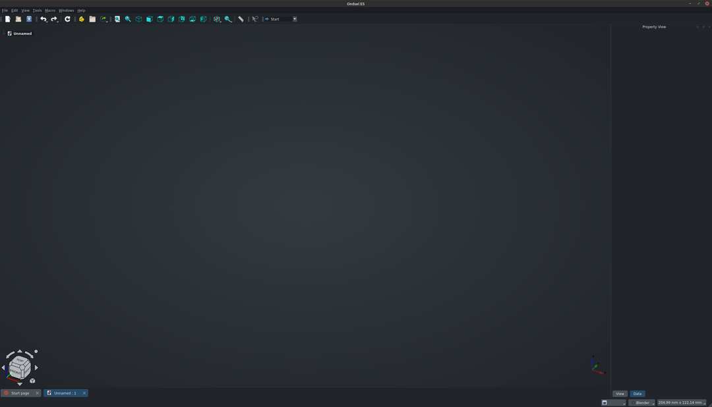
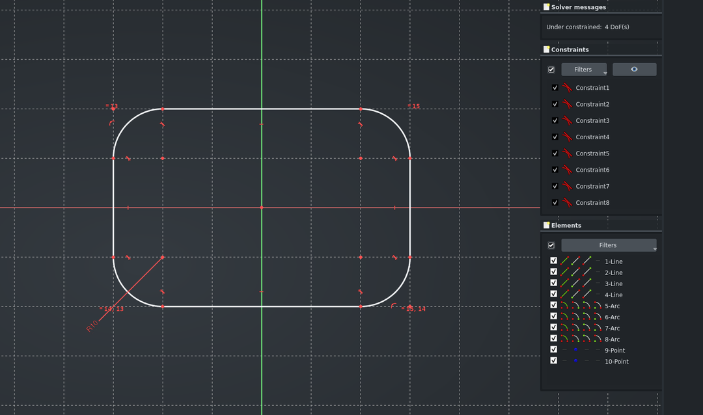
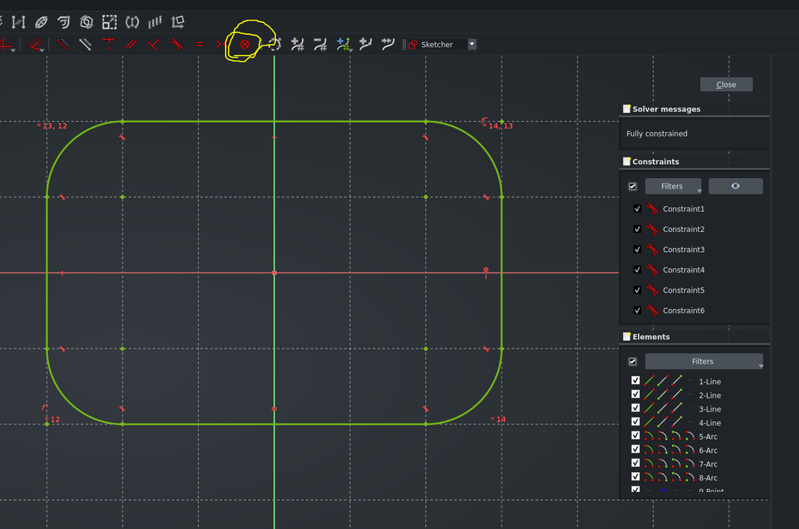
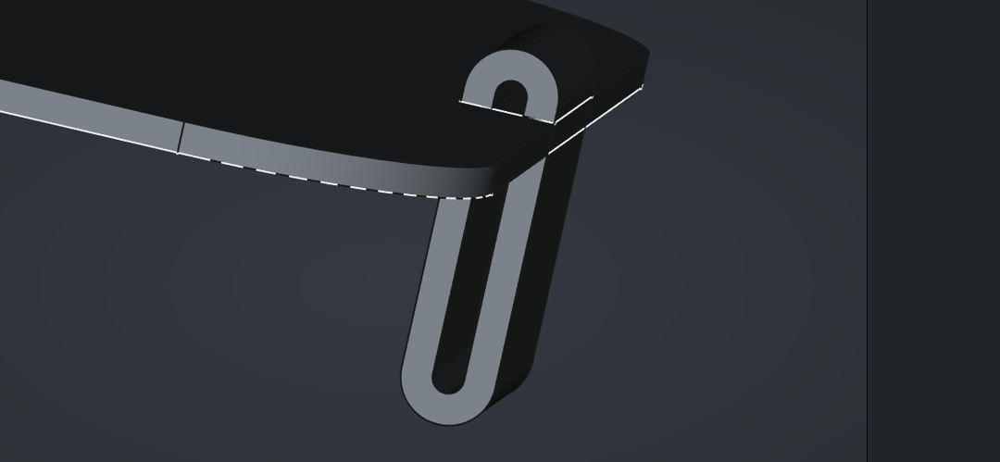

Table of Contents
0 - Assignment
Time to learn the basics of CAD.
Let’s review the assignment:
Use CAD tools to design a possible final project.
1: Pick a simple object and design it using vector drawing software such as InkScape, Illustrator or Boxy SVG. The object could be something as simple as a nail, a hinge or a bolt or anything related to your final project. It could be a logo of a product that you are about to prototype.
2: Use a raster graphics software of your choice, such as Gimp, Photoshop or Photopea, to edit, crop, resize and optimize an image of your choice.
3: Explore a few 3D modelling tools (e.g. Blender, FreeCAD (Onsdel ES), SolveSpace, Fusion 360, Solidworks, Rhino) and pick one to make something for your final project.I’ve omitted points 4-6, since they were just about the documentation.
1 - Simple Vector
From my in-progress log for the Glove Controllers:

Most of the glove will be soft parts, like the straps, or sensors. The finger caps might be on the chopping block currently in favor of a fingerless glove design. Basically the inverse of the current one. That considered, the part that would be the best candidate for a solid CAD model is, I think, the casing for the board.
It could be nice to be able to easily remove the cover from the casing using some sort of finger tab or latch. So I’ll first try to sketch out one in profile view. Unfortunately I couldn’t find an example of this in my apartment nor online as I don’t know the terminology yet. So I’ll be winging it.
I’ll be using Inkscape for this part. I used to use Adobe Illustrator but always prefer open-source software when there’s a viable alternative. I remember that some time ago Inkscape didn’t have Shape Builder or Art Board features, both of which were crucial to my vector workflow. Somewhat recently though, both of these features seem to have been added to Inkscape, along with a really nice improvement to the UI. I could finally make the switch. Awesome.
Starting with a blank project.
I’m using simple rectangles to first cover the shape I want.
Then the Shape Builder tool is used to create a compound shape from the intersections of these rectangles. I find that much easier and more reliable than trying to build the entire complex shape with the pen or path tools.
The concave corner in the bottom is straightened and there we have it, a side view of a part for which I can’t say if it works or is any good. I tried to look up what this part is called but the closest I’ve gotten to is “battery compartment lid”. Even then, there were multiple designs that fit that term.
I can’t say whether this part would be properly pliant in the way that it should. When the lid is closed, the “V” shape should get compressed horizontally, pushing against the edge of the casing and keeping the lid in place.
This makes me also wonder, would this lid just slide out if the entire side is sloped like this? Maybe there should be a “shelf”, a vertical part that is meant to press against the edge of the casing. Something like:
I don’t know what kind of shape this should be in order to bend nicely and not snap. Surely the material used and printing fibre direction (I think that’s a thing?) are also factors. I’ll leave it be for now and move on.
I modified the side of the casing to depict the inset area where the tab goes and made the lid thinner. I also added an arrow to depict where you would push in order to release the pressure and open the lid.
2 - Optimized Raster
I exported out the final vector page with a resolution of 1920 x 1920 with no background. I want to have some fun with this.
For raster editing I use Krita. Another open-source tool that has replaced Photoshop for my personal use-cases.
As you can see, I have the outlines there with a transparent background. Since the background of my site is dark, I want to turn the outlines white so the transparent image displays nicely on this page. I’m going to use a clipping group for this. This is equivalent to a clipping mask in Photoshop.
In Krita, the way this is done is by first grouping the layers that you want to be included in the clip. I created a white fill layer and grouped it with my black outline with the fill layer above it. Then I toggled the Inherit Alpha button on the fill layer, which, as the name suggests, makes it inherit the transparency of the layer below. Now the white fill is covering the outline and nothing else, keeping the background transparent.
Cropping is done by selecting an area and picking “trim selection” from the context menu.
All that remains now is exporting. I resized the image to a width of 1080px. I’ll export with the following settings to optimise the image:
Interlacing means the image will load not in bands from top to bottom but more evenly. I want the alpha channel, and there’s not much color data here that I need, so I can crush the channels down to 8bits without a worry.
The final image is this, with a size of 21,3kb.
Nice and clean.
3 - Something in CAD
For my introduction to CAD, I’m again leading with the preference for open-source. I downloaded SolveSpace, FreeCAD and Ondsel to get a feel for which would be nicest to work with. I chose to work with Ondsel. Starting again from an entirely blank project.
I’m not going into this completely blind. So I will watch a few videos on snap fit mechanisms to get an initial idea.
First: Plastic Parts Design: What Is Snap Fit?
From the video I would presume that what I am looking for is a Cantilever. Specifically, a *U-Shaped Cantilever**. Screenshot taken from the video.
From this I can deduce that my earlier vector drawing probably wouldn’t bend as nicely as I hoped. It makes sense now in hindsight that a rounded turn would better allow for gradual bending than a sharp angle would.
A Quick Correction
My mistake is bothering me, so let’s take a few minutes and correct it. I will use the same process as described earlier of arranging simple shapes and using the shape builder to create the final outline. This time I turned off the strokes and placed a transparent fill on the shapes, so I could align them more precisely.
Likely it would need adjustments still, but this is much better.
Back to Ondsel
I started by opening the Sketcher workbench and figuring out how to create a rounded rectangle.
I chose measurements of 60mm by 40mm. Arbitrarily, of course.
I am loosely following this tutorial series to get the hang of this program and turn this sketch into something solid. It’s a series about FreeCAD, but since Ondsel is just a UX wrapper around FreeCAD, it’s applicable.
I added a pad to my sketch, which is what made it solid and gave it a thickness. I don’t entirely understand it though.
Before trying to create the walls of the sketch, I quickly returned to the sketch to add the missing constraints. The rectangle already had quite a few constraints on it when I created it with the rectangle tool, but still had 5 degrees of freedom left. I got rid of them by placing a Constrain Block on the top and right edges, which prevent them from moving. Together with the existing constraints, those two got rid of all DoF’s. Feels a bit hacky though, not sure if that was best practice.
And now by just clicking around I found the actual thickness operator, which seems to play nicely with the pad. Increasing the pad and adding the thickness creates an open casing.
The actual lid is going to be much more challenging. The lid needs to sit nicely on top of the casing and not fall into it or fall off. Let’s see if it is possible to create a small inset on the top inner edge of the casing walls.

A chamfer is sort of it, but it needs to be a proper flat shelf. I tried a bunch of different things and tried to look online, but couldn’t figure out how this should be done. Then I came back to the chamfer:
By setting the Type to Distance and Angle and setting the angle to barely above 0 degrees, I’m effectively splitting the top face length-wise. Now If I can manage to extrude the outer face, I will have my shelf. Hacky as hell, but if it works it works. That mindset works in programming at least.
Not having a straightforward way to extrude a face is confusing me. I’ve looked around the web and haven’t found a solution at this point in the project.
Fine.
I created a new sketch on top of the casing walls that matched the thickness of the outer face, and padded that 1mm. Now I have the “shelf” where the lid can rest.
I would presume that these two padded pieces should somehow be constrained to each other. I don’t know how to do that just yet.
Now, to create the base of the lid, I took the following steps. They may not have been optimal.
- 1: Created a DatumPlane hovering above the casing.
- 2: Created a new Sketch on that plane and was careful to trace the shelf of the casing.
- 3: Discovered that I can’t pad the sketch because it is disconnected from the main body
- 4: Found out about and created a ShapeBinder referencing my sketch
- 5: Created a new Body and moved the binder to that body
- 6: Padded the binder
Might as well just duct tape the lid shut and spare the effort from making the cantilever.
Trying to figure out the boolean and other modeling tools.